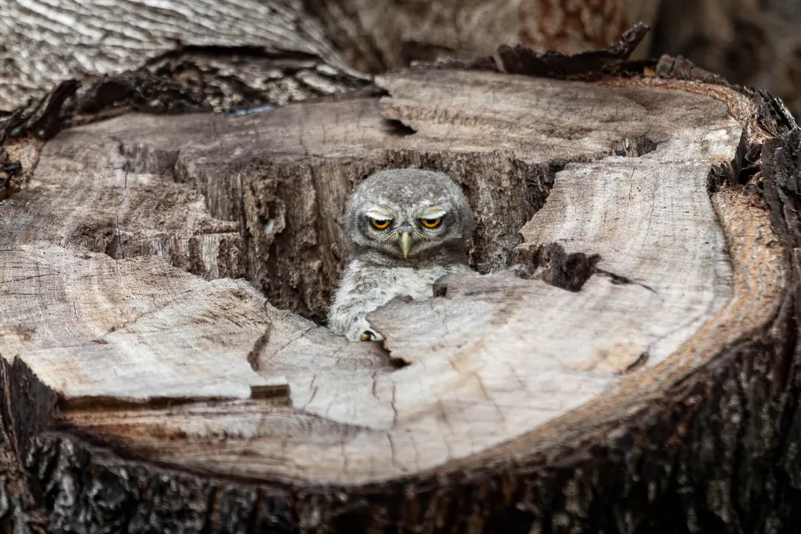

My first photo is a bird using GPT in a unique style
Second photo is a pikachu with a text "pokemon" under(it-s a really unique moment!)

Here a little cute spider in a grass
My fourth photo is an iced river in Ireland, which is seems impossible to be real

The last photo is a Larval moray, which is feeling like that when she is threatened